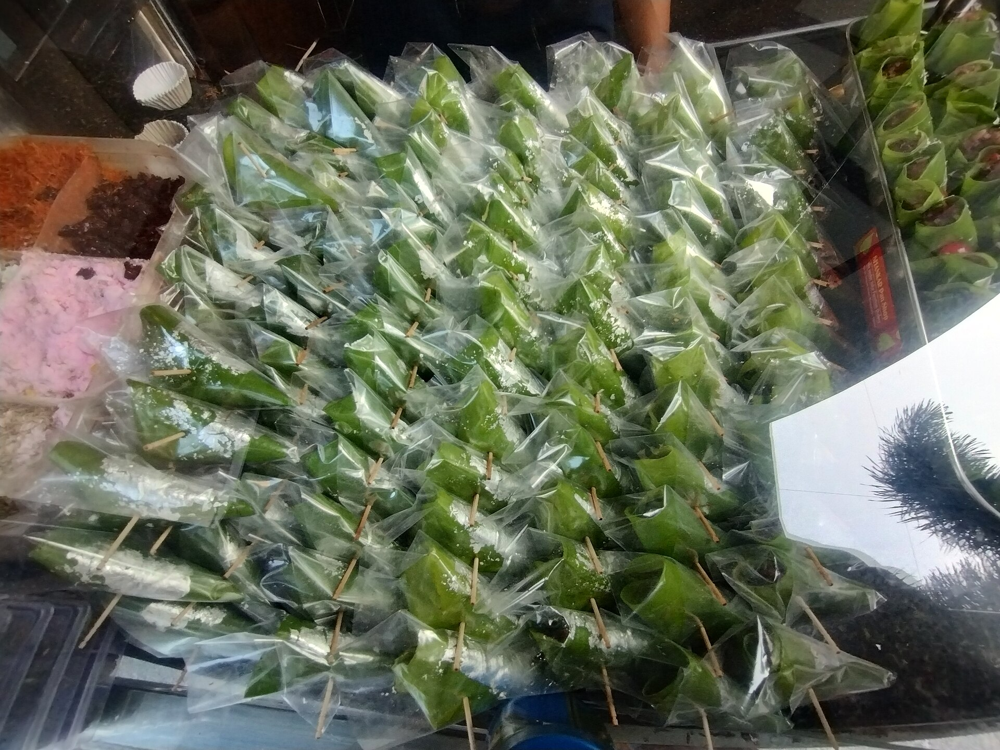
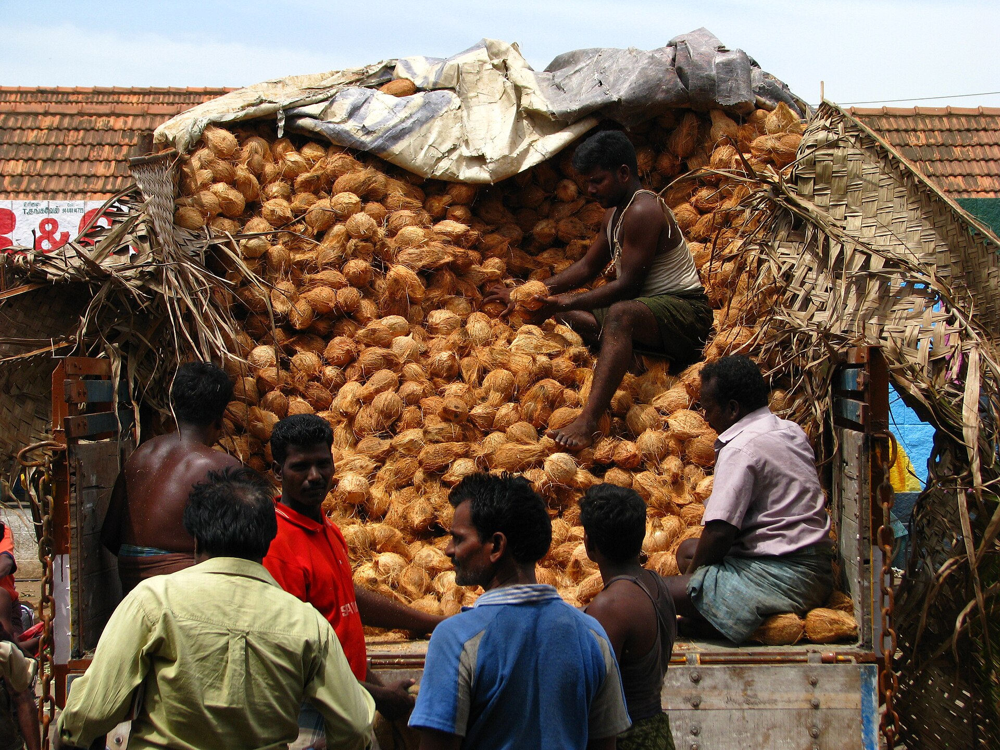
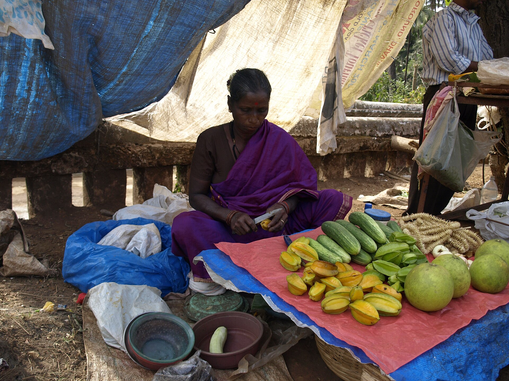

A candidate says one line. See what the line becomes.
A sketch of the idea by Axlios Media. The fields and the next step are made up for this demo and are not Hunar's screening. Hunar's own product calls every applicant in their language and screens for role fit.

Hiring, onboarding, training.

Real workforce challenges. Real business outcomes.
2.4x
conversion improvement for a quick commerce platform's partner acquisition
13 lakh
candidates screened by a diagnostics and healthcare customer
570+
stores in a retail screening programme, across 200+ cities
7.5 lakh
stale records reactivated into a live talent engine
All four are customer stories as printed on hunar.ai. Hunar also says AI HRs bring a 2.5X increase in hiring speed. These are Hunar's own figures, shown as published and not checked by Axlios Media.
Frontline hiring, in more than 20 languages.
- A ₹40 Cr Series A led by Blume Ventures, announced October 19, 2026.
- More than 1.5 Cr conversations handled until September 2026, a figure Hunar gave to Inc42.
- Voice AI that includes Tamil, Telugu and Kannada.
₹40 Cr
Turn conversations into better workforce outcomes.
